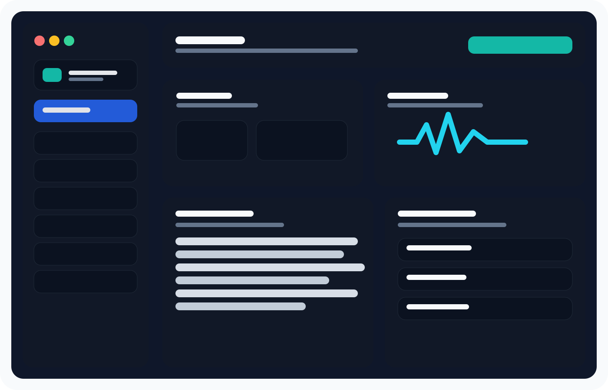

Device dashboard
Detect ADB, identify connected devices, confirm authorization status, and view the model, Android version, build, battery information, and storage summary.
SAD-B-D-M-T — Specialized Android Diagnostic, Backup and Device Management Tool — brings practical ADB-powered workflows into a clean desktop interface. It is designed to help users and technicians collect useful device information, preserve important files, inspect logs, and prepare a more organized support handoff.

The current build concentrates on tasks that are useful before a device is reset, reflashed, or sent away for repair. Its interface keeps the most important actions visible without presenting normal users with an overwhelming wall of ADB commands.
Detect ADB, identify connected devices, confirm authorization status, and view the model, Android version, build, battery information, and storage summary.
Create shareable reports that begin with SAD-B-D-M-T version details, report identifiers, privacy mode, and an explanation of the collected data.
Copy common user folders before making deeper repair decisions. Backups remain under the user's control on the connected Windows PC.
Watch Android logs while a problem occurs, filter the visible output, clear the display, and export a saved log file for later review.
Restart Android normally or request recovery and bootloader modes from a clearly labeled device-tools page.
Run manual ADB arguments when a technician needs more control while keeping the primary workflow approachable.
A useful report should explain itself. SAD-B-D-M-T records which program generated the report, the exact prototype version, a unique report ID, privacy status, and the outputs gathered during the scan.
Preserve important folders and collect evidence before the phone becomes harder to use.
Receive a consistent diagnostic package instead of disconnected screenshots and copied console fragments.
Keep direct ADB access nearby when a structured workflow needs a deeper manual follow-up.
Each part of the project has its own focused page, including a complete documentation section and an openly stated closed-source licensing model.
See what each part of the prototype does and what is deliberately outside its scope.
Understand the TXT and ZIP diagnostic exports, privacy choices, and report structure.
Follow setup, connection, diagnostics, backup, Logcat, and troubleshooting guides.
Review the exact capabilities included in the current prototype release.
The first working build has been tested with a real Android phone. Public downloads are not available yet. The download page records the current release status and the licensing model.